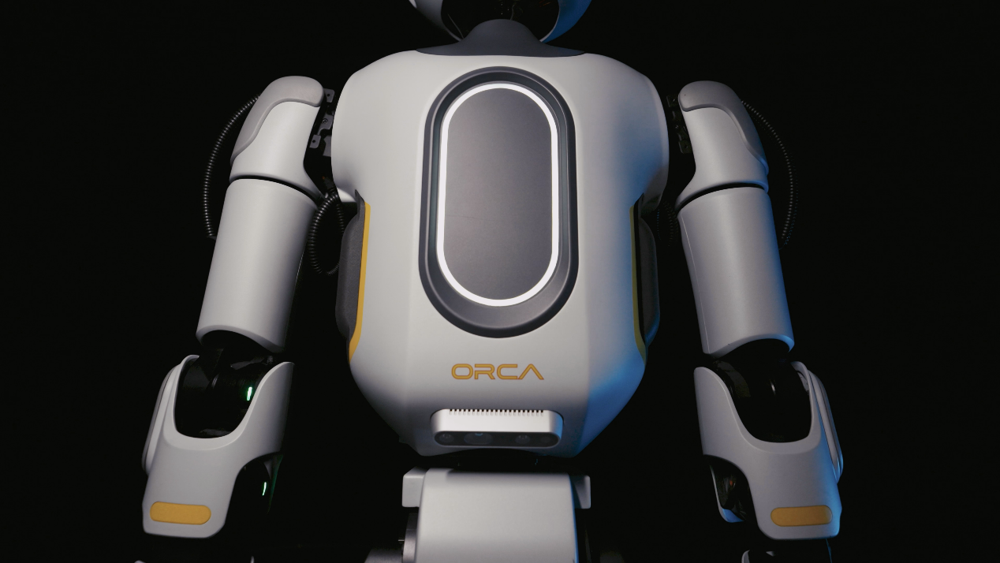
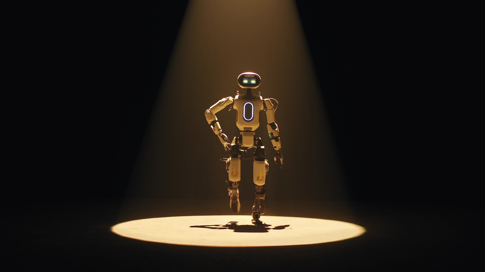
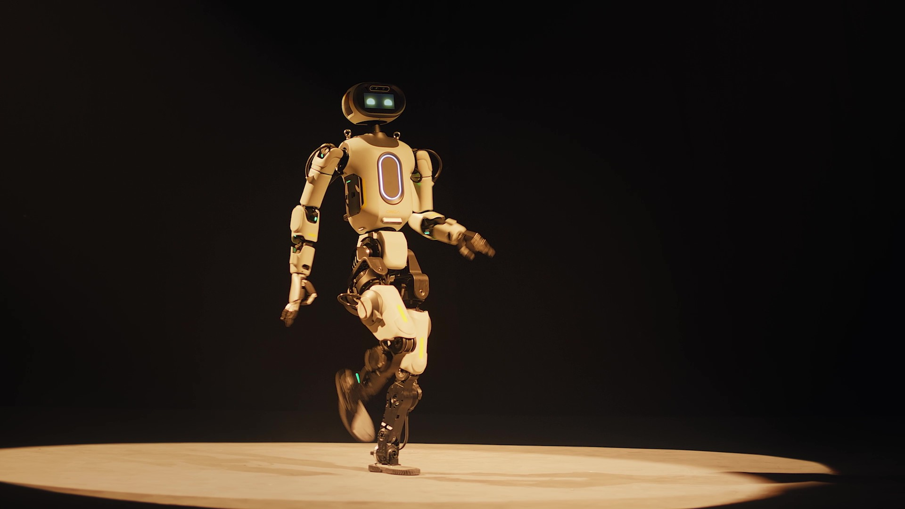
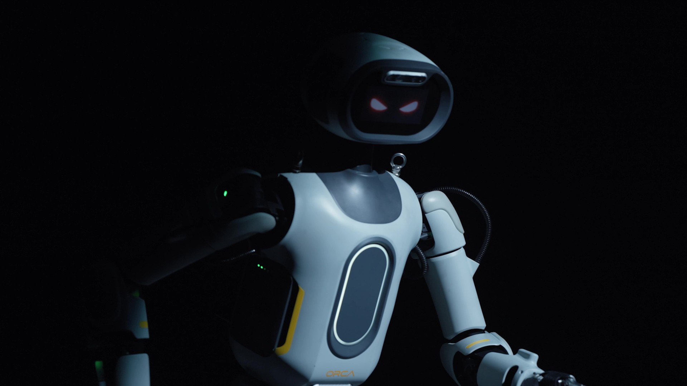
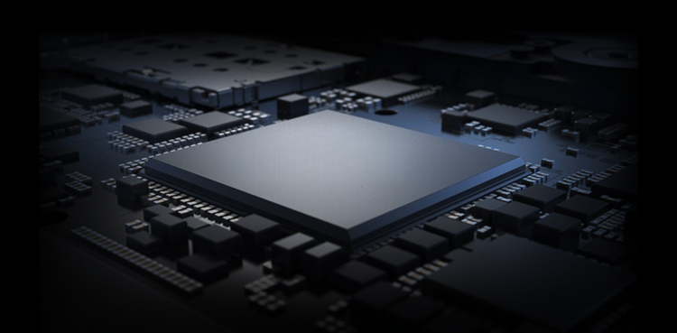
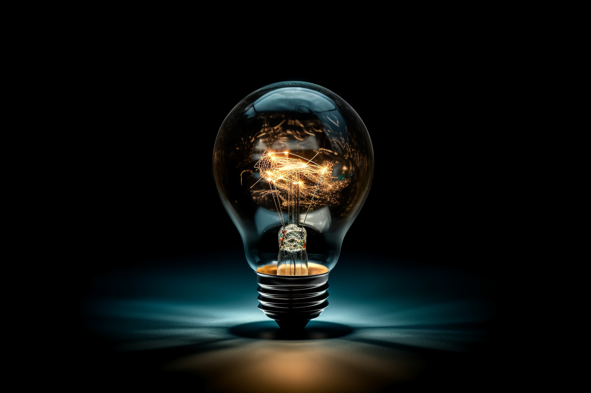

全面拟人，灵动共生


双臂强劲负载达10kg，末端选配灵巧手，胜任各类复杂精细操作
实现仿人直膝运动，无惧坡度/撞击，低能耗，更持久
首创情感步态，每一步都能灵动传递喜怒哀乐

灵动情绪外显屏，让喜怒哀乐实时可见
搭载大语言模型，配备感情化肢体动作，打造超沉浸社交体验

14核高性能CPU，超强脑力流畅响应，思考永远快人一步
同步加持高算力模组，复杂任务亦能轻松拿捏

开放全接口构建友好生态，Sim2Real Gap小，仿真到现实无缝连接
底层通信500-1000Hz高带宽，控制更精细
大幅降低二次开发门槛与应用落地成本
| 本体信息 | Orca I |
|---|---|
| 高宽厚(站立) | 1510 x 520 x 280mm |
| 单臂臂展 | 0.66m |
| 单腿(小腿+大腿)长度 | 0.84m |
| 带电池总重量 | 约42kg |
| 总自由度 | 28 |
| 单臂自由度 | 6 |
| 单腿自由度 | 4 |
| 单足自由度 | 2 |
| 腰部自由度 | 1 |
| 头部自由度 | 3 |
| 膝关节最大扭矩 | 150Nm |
| 单臂最大负载 | 约5kg |
| 末端执行器 | 灵巧手，附赠自适应软夹爪 |
| 关节运动范围 |
腰关节: ±70° 膝关节: -35°~+120° 髋关节: Pitch -70°~+110° Roll -15°~+90° Yaw -25.5°~+149° 足部: Pitch ±90° Roll ±35° |
| 关节编码器 | 双编码器 |
| 散热系统 | 局部风冷散热 |
| 供电方式 | 双锂电池供电 |
| CPU | 14核高性能CPU |
| GPU | NVIDIA Jetson Orin Nano Super |
| 3D 激光雷达、深度相机、IMU | 支持 |
| 六脉环形阵列麦克风、扬声器 | 支持 |
| WI-FI6、蓝牙 5.2 | 支持 |
| 智能电池(快拆) | 5000mAh x2 |
| 续航时间 | 站立2h/行走1h |
| 手持式遥控器 | 支持 |
| 拓展口 | USB3.0、以太网、48V |
| 二次开发 | 标配例程及高阶版本的人形机器人动作相关的训练及部署代码 |
| 遥操系统 | 开放全身遥操作接口 |
注：
[1]以上配置，在不同型号/方案中存在差异，购买前请务必咨询销售;
[2]产品外观后续可能会有升级调整，请以届时实物为准;
[3]本页面有些示例功能，还在开发测试完善，后续陆续开放给用户;
[4]请遵守各地区法律法规。
Comprehensive Personification, Smart Symbiosis
The strong load of both arms reaches 10kg, and the end is equipped with dexterous hands, which are competent for all kinds of complex and fine operations
Achieve human-like straight knee movement, no fear of slope/impact, low energy consumption, longer lasting's first emotional gait, every step can be smart to convey emotions
Smart emotional display screen, so that the joy and anger can be seen in real time
Equipped with a large language model, equipped with emotional body movements, to create a super immersive social experience
14-core high-performance CPU, super brain power and smooth response, thinking is always one step faster
Synchronous blessing high-power module, complex tasks can also be easily handled
Open full interface to build friendly ecology, small Sim2Real Gap, seamless connection from simulation to reality
Bottom communication 500-1000Hz high bandwidth, more sophisticated control
Significantly reduce the secondary development threshold and application landing costs
| Ontology Information | Orca I |
|---|---|
| high and wide (standing) | 1510 x 520 x 280mm |
| single arm span | 0.66m |
| length of single leg (calf thigh) | 0.84m |
| with battery | about 42kg |
| Total Degrees of Freedom | 28 |
| single-arm degrees of freedom | 6 |
| single-leg freedom | 4 |
| single-legged degrees of freedom | 2 |
| waist degree of freedom | 1 |
| Head Degrees of Freedom | 3 |
| Maximum torque of knee joint | 150Nm |
| single arm maximum load | about 5kg |
| end effector | dexterous hand with adaptive soft gripper |
| joint range of motion |
lumbar joint: ±70° Knee joint:-35°~120° Hip: Pitch -70°~110° Roll -15°~90° Yaw -25.5°~149° Foot: Pitch ±90° Roll ±35° |
| joint encoder | double encoder |
| cooling system | Local air cooling |
| Power supply mode | dual lithium battery power supply |
| CPU | 14-core high-performance CPU |
| GPU | NVIDIA Jetson Orin Nano Super |
| 3D LiDAR, Depth Camera, IMU | support |
| six-pulse ring array microphone, speaker | support |
| WI-FI6, Bluetooth 5.2 | support |
| smart battery (quick release) | 5000mAh x2 |
| Endurance | standing 2h/walking 1h |
| Handheld Remote Control | support |
| expansion port | USB3.0, Ethernet, 48V |
| secondary development | standard routines and advanced versions of humanoid robot motion-related training and deployment code |
| Teleoperation System | open full-body teleoperation interface |
Note:
[1] The above configuration, there are differences in different models/schemes, please be sure to consult the sales before purchasing;
[2] The appearance of the product may be upgraded and adjusted in the future. Please refer to the actual product at that time;
[3] There are some sample functions on this page, which are still being developed and tested, and will be opened to users in succession;
[4] Please comply with local laws and regulations.